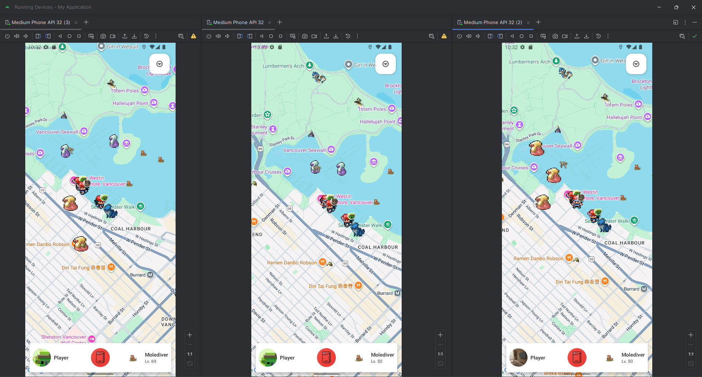

About
Geomon is a location-based mobile RPG inspired by the question: “What if we combine Pokémon GO with old-school Pokémon?” Players explore a real-world map, collect monsters and items, and battle using a classic turn-based system.
Google Maps-based exploration and tracking, Firebase monster/item collectibles, AI Chatbot with Monsters, Pokémon-style turn-based battles, Multiplayer
Project Info
- Role: Software Developer
- Team Size: 4
- Time Frame: October 2025 - December 2025
- Course-Based Software Project: CMPT 419 - Special Topics in Artificial Intelligence, SFU
- Language: Kotlin, XML
- Tools: Android Studios
Core Features
• Built a JSON repository thread to load and scale monster stats + move data into the game and Firebase.
• Implemented the Pokémon-style turn-based battle system, including move selection, stat-based outcomes, and battle flow logic.
• Developed the Geomon Item Bag and inventory experience to support collecting, managing, and using items on the rendered map.
• Created the Stat Screen UI to clearly surface monster attributes and progression to players.
Multiplayer
• Displayed visible player profile for each player on the map.
• Utilized Turn-based combat implementation for the player verse player battles.
